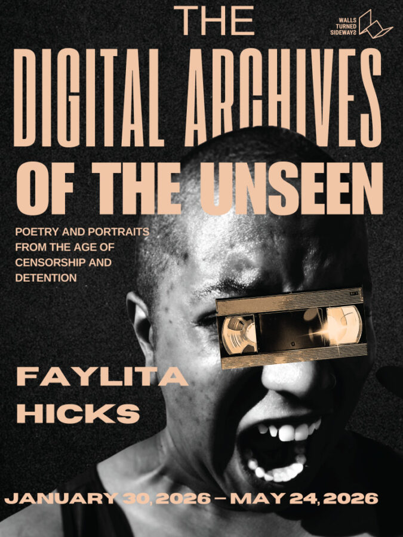

Faylita Hicks : The Digital Archives of the Unseen: Poetry and Portraits from the Age of Censorship
Through deconstructed VHS tapes inscribed with poetry and collage portraits of directly impacted people, Faylita Hicks transforms discarded media into testimony. This installation resists erasure, confronting censorship, migrant detention, and mass incarceration while insisting on the enduring presence of those the state seeks to silence.
This debut solo exhibition by Hicks unspools memory, testimony, and resistance from the fragile material of VHS tape. Each strand, once a vessel of recorded surveillance and entertainment, is reimagined as a surface for poetry—lines etched into magnetic ribbon like incantations against disappearance. Alongside these sculptural interventions, Hicks presents original collage portraits of people directly impacted by censorship, migrant detention, and mass incarceration. Together, the works transform discarded technology and fragmented images into an active archive—one that documents the unseen, the silenced, and the deliberately erased. By weaving together poetry, portraiture, and sculptural form, Hicks makes visible the lives and stories too often reduced to data or forgotten in official records. In an age defined by detention and censorship, this exhibition insists on remembering, imagining, and witnessing otherwise.
About Faylita:
Faylita Hicks (she/they) is an Afro-Latinx writer, interdisciplinary artist, Hoodoo practitioner, and cultural strategist whose work explores grief, digital witnessing, and liberation through poetry, image, sound, and ritual. Their books include A Map of My Want (Haymarket Books, 2024), winner of the 2025 Midwest Book Award, and HoodWitch (Acre Books, 2019), a Lambda Literary Award finalist. Their forthcoming memoir A Body of Wild Light (Haymarket, 2027) expands their inquiry into carcerality, spirituality, and embodied memory.
A featured recording artist on the Grammy-nominated album The Fury, Hicks’ performances and installations have appeared at the Ford Foundation, Art at a Time Like This, SaveArtSpace, the Center for Art and Advocacy, and more. They will be the 2026 Worth Rises Artist-in-Residence.
For more information on Faylita’s work please see their website at https://www.faylitahicks.com/